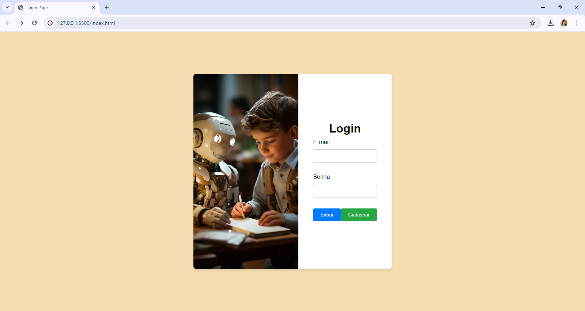
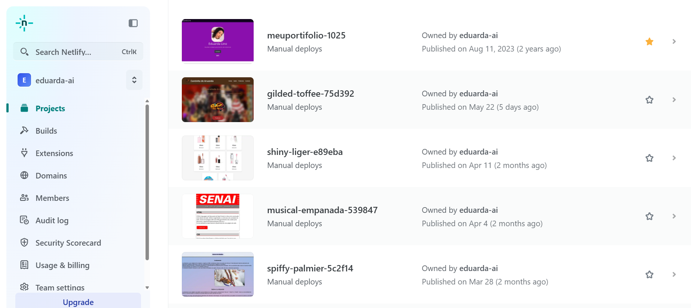

Projetos

Projeto 1
Site interativo

Projeto 2
Página de login simples

Projetos Variados
Clique aqui: Ver no Netlify
Olá! Sou desenvolvedora de software júnior e analista de sistemas, formada em Análise e Desenvolvimento de Sistemas pela Anhanguera. Atualmente, estou aprofundando meus conhecimentos por meio do curso técnico de ADS no SENAI.
Atuo como Aprendiz Tech na Clarios, onde tenho a oportunidade de aprender na prática e contribuir com soluções inovadoras em tecnologia. Também possuo experiência anterior como suporte de TI na Prefeitura de Sorocaba, atuando no suporte N1 e fortalecendo minhas habilidades técnicas e de atendimento.
Sou apaixonada por tecnologia e inovação, e acredito que o aprendizado contínuo é fundamental para o crescimento profissional. Estou sempre em busca de novos desafios e oportunidades que me permitam evoluir e participar de projetos que gerem impacto positivo e transformação.
Site interativo
Página de login simples
Clique aqui: Ver no Netlify
Entre em contato comigo através das minhas redes: